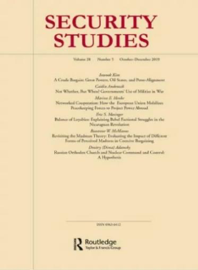
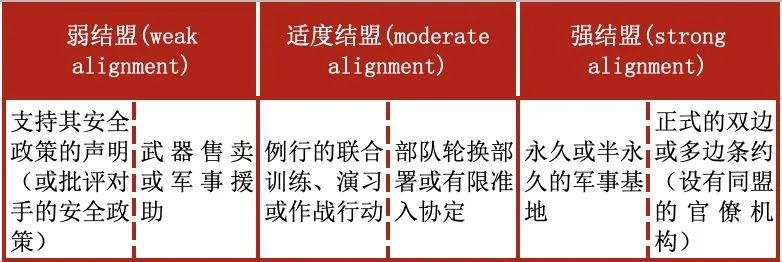
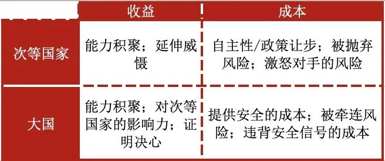
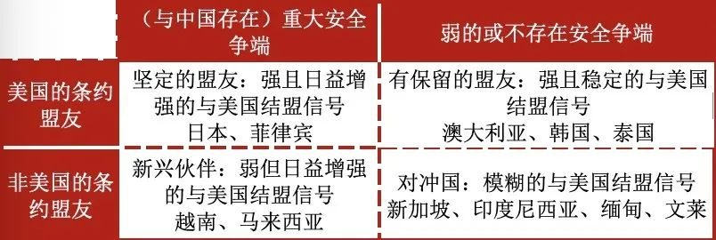
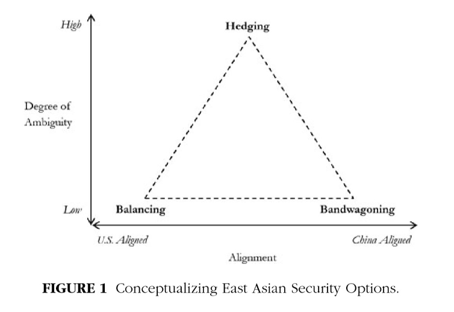

收录于合集

作品简介
【作者】 Darren J. Lim，澳大利亚国立大学高级讲师，2014年获普林斯顿大学博士学位，主要研究兴趣为地缘经济学、大战略与印太地区等；Zack Cooper，普林斯顿大学讲师，主要研究兴趣为中美关系与美国亚太防务政策等。
【编译】 李源（国政学人编译员，吉林大学公共外交学院）
【校对】 朱晓洁、蔡宇
【审核】 刘瑛琛
【排版】 高佳美
【来源】 Lim, D. J. & Cooper, Z. (2015). Reassessing Hedging: The Logic of Alignment in East Asia. Security Studies , 24 (4), 696-727.

期刊简介

《安全研究》(Security Studies)收录并出版具有创新性的学术稿件——无论是理论研究、实践经验分享还是两者兼而有之。安全研究包含广泛的议题，涵盖核扩散、核威慑、军民关系、战略文化、种族冲突、流行病与国家安全、民主政治、外交决策以及定性与多方法研究的发展。根据Journal Citation Reports显示，其2019年的影响因子为2.167。
重评对冲：东亚地区的结盟逻辑
Reassessing Hedging: The Logic of Alignment in East Asia
内容提要
学者们普遍认为，东亚地区的次等国家并未单纯地选择制衡或追随，而是通过将经济、政治接触与风险管理(Risk Management)结合在一起，在中美之间进行对冲。但很少有学者反思“对冲”这一概念的广泛使用是否提供了真正的分析价值。本文重新定义了对冲，并以此分析了东亚国家对制衡与对冲的选择。本文认为，“对冲”不应包括那些不要求国家在其安全选择中面临权衡的成本较低的非安全行为，将“对冲”重新定义为：次等国家发出的与大国共同安全利益程度的模糊性信号。这一定义将对冲的焦点重新置于安全关系上，并较好地解释了（次等国家）在自主性与结盟之间的权衡。基于该定义，本文认为，“对冲”比学者们普遍认为的更为狭窄。许多东亚国家或与美国有着同盟关系，或与中国存在重大安全争端，这造就了一种“路径依赖”(Path Dependencies)，强化了东亚国家的制衡行为并限制了它们对“对冲”的选择。因此，本文有助于厘清被以往“对冲”概念掩盖的国家间安全战略的差异。
文章导读
01
对冲的逻辑
面对中国崛起，学者们通常认为大部分的东亚次等国家并未在制衡——追随的二分框架中进行选择，而是推行着处于两者之间的多种战略。这些战略通常具备三个共同的要素：经济接触、政治接触与风险管理。学者们提供了多种标签(Label)以描述东亚国家的行为组合，“对冲”便是其中之一。它主要涵盖两种不同的概念：第一类是为了促进与中国的经济、政治、外交与制度关系，包括接触、适应(Accommodation)、陷入(Enmeshment)、束缚等政策。第二类侧重于在不确定的环境中维持有利的均势并遏制破坏稳定的行为，包括复杂制衡(Complex Balancing)、软制衡(Soft Balancing)、低强度制衡(Low-Intensity Balancing)等概念。
然而，一旦将“对冲”分为安全要素与非安全要素，我们可以发现风险管理政策与传统的制衡行为是非常相似的。那么 将非安全要素纳入到对冲的概念中为这一基本的安全问题提供了有意义的分析价值吗？ 作者认为答案是没有。经济接触的动机不完全是出于安全考虑（甚至不是主要动机），而是为了获取同中国经济上联系带来的巨大收益。政治接触同样成本较低，并不会破坏国家的安全结盟战略。因此， “对冲”这一伞状概念(Umbrella Concept)无法区分出不同国家的结盟选择。对国家结盟选择差异的忽视进一步削弱了这一概念的分析价值。 基于此，本文试图发展出一个可以涵盖东亚“对冲国”安全行为变化的简单模型。
02
结盟选择中权衡(Trade-Offs)的重要性
目前的对冲概念并没有为国家的其他行为选择（更别说国家间的行为差异）提供理论基础，一旦国家能够对冲，那么它将会一直选择对冲作为其最佳策略。作者并不否认促进政治、经济关系对深化国家安全利益的积极作用，但作者强调将这些政策纳入到对冲概念中具备很少的分析价值，因为其并不涉及高成本的权衡，没有看到国家行为的变化，也很难展现国家的结盟选择。随着对冲在东亚国家中的广泛使用，它越来越退化为一个标签，而不是一个实质的分析性概念。
作者认为，更好地定义“对冲”在于明确承认它是一种“高成本”的策略。制衡与追随明确承认国家面临的权衡——同一大国结盟会使自己置于另一大国的对立面。而目前对冲概念的特点在于避免国家面临权衡。其症结在于对冲在理论上将经济、政治接触等政策作为国家安全战略的组成部分。而这些政策的低成本使得其安全结盟的信号较弱。因此， 作者完全从安全领域内的国家行为出发，将对冲重新定义为：（次等国家）发出与大国结盟的模糊性信号的行为，它要求国家在自主性与结盟的基本利益之间做出权衡。
03
作为信号发出的结盟：一个简单的模型
作者将结盟定义为：次等国家发出的与某个大国有着共同安全利益的信号。结盟会采取何种形式的信号呢？ 表一展现了结盟行为的光谱。次等国家与大国共同利益的信号强度从左到右逐渐增强。

表一：安全结盟行为的光谱
如表二所示，对于次等国家与大国而言，结盟既会带来收益，也会增加成本。 随着结盟信号强度的减弱，结盟的收益与成本也在降低，这反过来又增加了“当发生冲突时，次等国家与大国是否会联合起来”这一最终问题的不确定性。因此，如果一个与大国结盟的次等国家想要改善其与敌对大国的关系，那么它可以展示其缩减同盟合作规模的意图。这样的信号会产生三种后果：第一，通过增强本国的自主性，降低了结盟成本；第二，降低了当本国受到攻击时大国盟友提供安全援助的可能性，从而减少了结盟收益；第三，增强了“在大国间冲突中，次等国家会如何选边”的不确定性。
同时，作者也进一步强调了将经济、政治接触排除出结盟行为光谱的必要性。 由于这些政策几乎不涉及到权衡，因而是关于安全结盟的弱信号。排除接触政策的动机在于展示次等国家结盟选择的多样变化。

表二：次等国家—大国结盟的安全收益与成本
04
作为高成本选择的对冲：东亚国家的结盟选择
正如上文所言，本文将对冲定义为：次等国家发出与大国共同安全利益程度的模糊性信号的行为，这实际上是有意避免与任何大国的明确结盟，并由此带来了“次等国家如何在大国间冲突中选边”的更大不确定性。
该定义考虑到了（次等国家）在自主性与结盟之间的权衡，有助于展现国家间的行为差异，因而是对现有研究的完善。如果一个国家对其结盟选择发出模糊的信号，它实际上倾向于放弃强结盟带来的安全收益，以换取更多的政策自主性。因此， 在东亚地区中，当一个倾向于维持现状的次等国家放弃与美国结盟带来的安全收益，而在中美大国竞争中保持政策自主性时，对冲就会产生。
该定义也引发了对两类国家结盟选择中面临的路径依赖(Path Dependency)的关注， 对这两类国家来说，选择对冲意味着更高的成本或更低的收益。 第一类国家与大国（美国）缔有同盟关系；第二类国家则与某一大国（中国）有着重大和激烈的安全争端。
表三依据路径依赖的这两个维度对东亚国家进行了分类。根据这一分类， 许多通常被视为对冲国的东亚国家实际上发出的信号更符合制衡行为，因为路径依赖限制其战略选择。 作者预测了四种结盟行为： 坚定的盟友(Resolute Allies)、新兴伙伴(Emerging Partners)、有保留的盟友(Reserved Allies)与对冲国(Hedging States)。

表三：结盟选择中的路径依赖
本文的定义将东亚对冲国的数量缩小到新加坡、印度尼西亚、缅甸与文莱四国。 这些国家不受任何一种形式的路径依赖限制，并且拥有真正的结盟选择，保留了与任一大国结盟的自由。 它们能够有效地与两个大国发展积极的非安全关系，同时发出关于其安全利益与未来结盟选择的模糊信号。这种对冲行为反映了以牺牲强结盟为代价的自主性最大化选择。

05
证据：哪些国家正在推行着对冲？
本部分选取了四种结盟行为中有代表性的四个国家：日本、澳大利亚、越南与新加坡，作为经验证据以支持本文模型的预测。在现有许多文献中，这四个国家都被描述为推行着对冲战略，但本文的模型预测了它们结盟信号的变化，只有新加坡被预测为推行着对冲战略。
06
结论与政策含义
许多文献使用对冲这一术语来描述东亚次等国家面对中国崛起的反应。本文认为，目前囊括安全政策与非安全政策的对冲概念是一个单纯的描述性术语，其具备很小的分析价值。目前把对冲作为一个伞状概念使用无法深入分析基本的安全问题，因为它既没有区分出结盟的不同类型，也没有认识到这些彼此竞争的战略选择中固有的权衡。本文的目的在于提出一个展示东亚国家行为变化的简单模型。为此，本文将对冲重新定义为一种“高成本”的安全政策，需要国家在结盟与自主性之间做出权衡。对冲国会发出与大国共同安全利益程度的模糊性信号。该定义凸显了国家在许多结盟选择中面临的路径依赖。而这些路径依赖减少了国家发出模糊性结盟信号的收益。本文对对冲的重新定义与对路径依赖影响的认识展现了国家间的行为差异。
本文的研究至少展现出以下三点政策含义：第一，美国的地缘政治地位在某种程度上比所认为的更强。伴随着中国相对权力的增长，美国在东亚的同盟与伙伴关系可能会进一步加深。第二，中国的政策制定者应更强调中国对外政策中的合作性内容，以避免疏远东亚邻国。第三，针对东亚没有结盟的国家（例如新加坡与印度尼西亚）的竞争可能会加剧。
译者评述
冷战后，伴随着中国的快速崛起，传统国际关系理论中“制衡—追随”的二分框架越来越难以描述东亚国家为应对地区不确定性采取的诸多相反甚至相互矛盾的战略选择。作为从金融学借鉴而来的重要概念，对冲(hedging)受到了学者们越来越多的关注。但在将这一概念运用至国际关系研究的过程中，关于对冲的不同理解与界定标准导致这一概念出现了范围与外延宽泛而不清晰的问题。本文从单一的安全领域界定对冲，将非安全要素排除出对冲的概念框架，从信号模糊性的角度将对冲理解为东亚国家在自主性与结盟之间做出的权衡，并从“是否为美国盟友”与“是否与中国存在重大安全争端”两个方面理解东亚国家的安全战略选择。
本文虽发表于2015年，但它可能向我们提出了一些有关对冲研究的值得反思的问题：
第一，对冲行为应当涉及哪些领域？本文主要是从单一的安全领域界定对冲，除此之外，至少还存在两种声音：第一种是将对冲与东亚地区安全—经济的二元格局相联系；第二种将领域扩大，即认为东亚国家的对冲战略涉及安全、经济、政治、外交等诸多不同的领域。这些领域之争一定程度上会阻碍关于对冲的学术对话，造成其概念与分析范围的模糊不清。
第二，在这一金融学概念应用至国际关系研究的过程中，随着越来越多的东亚国家被视为对冲国，它是否还具备真正的分析价值？“对冲”应具备的价值至少体现为两点：其一，通过对冲这一术语，清晰地将东亚国家的战略选择界定为超越“制衡—追随”二分框架的新类别。其二，容许学者们在其框架下发现并研究国家间具体行为的差异与变化。【1】把对冲应用至对东亚国家战略行为的分析似乎实现了第一点价值。但正如本文所强调的，目前对这一术语的研究并未清晰地向我们展现出国家行为的差异。如果几乎所有的东亚国家都被描述为推行着对冲战略，那么引入这一术语并没有实质性解决国家战略行为分类标准不够清晰的问题，【2】也没有为我们深入理解东亚国家的对华战略做出贡献。
第三，什么因素会限制国家选择并维持对冲战略？以菲律宾为例，按照作者的观点，与美国缔有同盟、与中国存在重大安全争端使菲律宾选择对冲战略的成本较高，因而会使得菲律宾成为美国的“坚定盟友”。然而我们发现2016年杜特尔特上台后，菲律宾的安全战略呈现出了“疏美亲中”的转向，这似乎并不符合作者提出的框架。但从长期来看，杜特尔特政府乃至杜特尔特之后，菲律宾的对冲战略能否保持稳定抑或得到长期维持同样可能受制于作者提出的这两个因素。选择对冲战略是一方面，而对冲战略能否得到长期维持或有效运转则可能是另一个问题。除了作者提出的这两个因素，是否还存在其他因素会限制国家选择并维持对冲战略？如果有的话，其作用机制是什么？
第四，东亚国家确立对冲战略的影响是什么？本文认为选择结盟信号模糊的对冲战略会带来“东亚次等国家如何在大国间冲突中选边”的更大不确定性。该问题并非本文重点，同时作者将对冲界定在安全领域内似乎也会限制对这一问题的分析。但作者提出的这一点影响对理解这一问题可能是不够的。除此之外，东亚国家确立并维持对冲战略会给其自身、其他国家（例如中美两国的地区政策）与地区秩序（例如中美在地区的竞争态势、东盟的一体化进程等）等带来哪些影响？这些问题似乎也值得更多的探讨。
参考文献：
【1】 温尧：《东南亚国家的对华对冲：一项理论探讨》，载《当代亚太》，2016年第6期，第8页。
【2】 刘丰、陈志瑞：《东亚国家应对中国崛起的战略选择：一种新古典现实主义的解释》，载《外交评论》，2015年第4期，第8页。
文章观点不代表本平台观点，本平台评译分享的文章均出于专业学习之用, 不以任何盈利为目的，内容主要呈现对原文的介绍，原文内容请通过各高校购买的数据库自行下载


好好学习，天天“在看”
国政学人
支持学术公益与知识传播
微信扫一扫赞赏作者 __赞赏
已喜欢，对作者说句悄悄话
取消 __
发送给作者
发送
最多40字，当前共字
上一页 1/3 下一页
长按二维码向我转账
支持学术公益与知识传播
受苹果公司新规定影响，微信 iOS 版的赞赏功能被关闭，可通过二维码转账支持公众号。